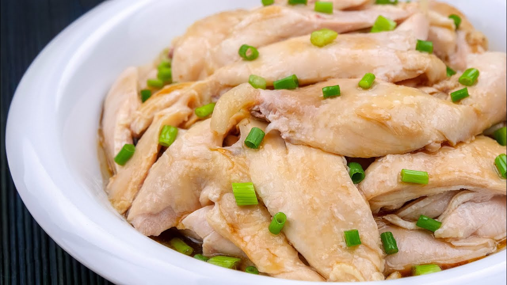
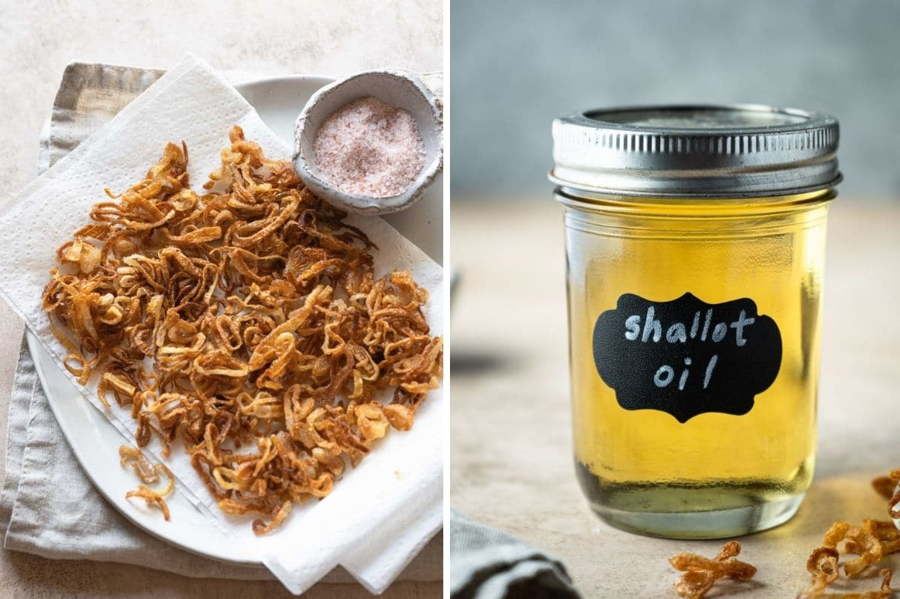
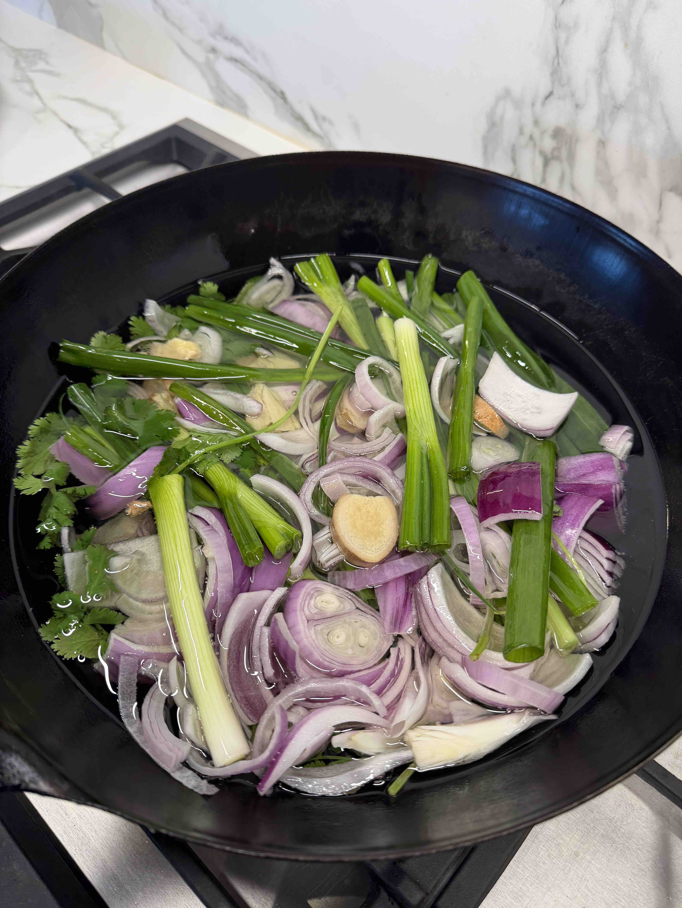
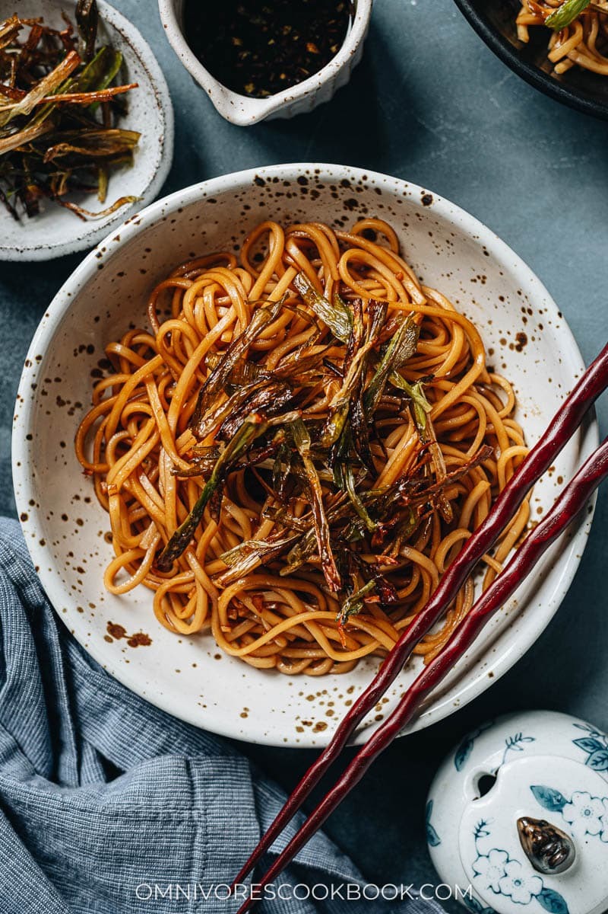

The genius of this dish is restraint. Chicken legs steamed simply, letting the shallot oil carry all the perfume. That slow-rendered oil — drawn from green onions, red onion, dried shallot, coriander, and ginger over low heat — is the soul of the recipe. Combined with the concentrated steaming juice into a secret sauce, it transforms plain poached chicken into something worth making again and again. The noodles are not optional.



Ken's kitchen, Yerba Buena — aromatics in cold oil, ready for the low-and-slow. Red onion, green onion, ginger, coriander. This is the moment before the magic happens.
01
Ingredients
Chicken & Marinade
Chicken legs
800g (~2 large)
Salt
2 tsp
Ginger slices
8 pieces
Green onion, cut in sections
1 stalk
Shaoxing wine
2 tbsp
Garlic powder (or sand ginger powder)
½ tbsp
Shallot Oil
Green onions
100g
Dried shallot
1 piece
Red onion
½ piece
Coriander (with root)
1 stalk
Ginger
3 slices
Cooking oil
~200ml (2× weight of solids)
Ratio rule: 1 part aromatics to 2 parts oil by weight. Don't rush — low and slow extracts everything.
Secret Shallot Soy Sauce
Steamed chicken juice (from plate)
3 tbsp
Sugar
4 tsp
Light soy sauce
3 tbsp
Oyster sauce
1.5 tbsp
Prepared shallot oil
6 tbsp
Dark soy sauce (for noodles, optional)
A few drops
Garnish & Sides
Noodles (udon, Shanghai, or any type)
Per serving
Fried egg
1 per serving
Toasted sesame seeds
To taste
Green onion shreds / cucumber / ginger
To taste
02
Instructions
1
Soak & Prep the Chicken
Clean chicken legs and soak in lightly salted water for 30 minutes to remove blood and odor. Drain thoroughly and pat completely dry with paper towels. Moisture is the enemy of good flavour here.
2
Marinate
Rub salt evenly over all surfaces. Add ginger slices, green onion sections, garlic powder, and Shaoxing wine. Massage the aromatics deeply into the meat. Cover and refrigerate for at least 2 hours — overnight is ideal.
3
Make the Shallot Oil
Lightly smash green onion heads; cut stalks into sections. Slice red onion, dried shallot, and ginger. Cut coriander into segments. Place all aromatics into a cold pan and add the oil. Heat on low heat for 5–8 minutes, stirring occasionally. Once ingredients turn golden brown and steam stops (moisture is gone), turn off heat — residual heat will finish the job.
⚠️ Always start with cold oil on low heat. If any pieces darken too fast, remove them immediately — scorched aromatics turn the oil bitter. Strain into a sterilized glass jar. Reserve crispy green onion pieces for garnish.
4
Steam the Chicken
Place marinated chicken legs on a rimmed plate in a steamer. Steam on high heat for 20 minutes. Turn off heat and let sit in the closed steamer for 5 more minutes to fully cook through while staying juicy. Remove and let cool.
Gold rule: Save every drop of juice collected on the steaming plate. This is the foundation of your sauce.
5
Build the Sauce
Combine 3 tbsp hot chicken juice with the sugar and stir until dissolved. Add light soy sauce, oyster sauce, and 6 tbsp of fresh shallot oil. Mix well. Taste and adjust — it should be slightly sweet, savory, and deeply fragrant.
6
Shred & Plate the Chicken
Hand-shred cooled chicken, discarding bones. Arrange on a plate and top with fresh green onion shreds. Pour sauce generously over the chicken. Optional but worth it: flash-heat a spoonful of shallot oil until just smoking, then pour over the green onions for a burst of wok hei aroma. Finish with toasted sesame seeds.
7
Shallot Oil Noodles
Boil noodles per package instructions and drain well. Mix sauce in a bowl (add a few drops of dark soy sauce for deeper colour if you like). Toss noodles in the sauce. Top with a fried egg and the reserved crispy fried shallots. This is a full meal on its own.

03
Chef's Notes
🫙
Shallot Oil Storage
Keeps in a cool, dry place for up to 1 month. Make a large batch — it elevates everything: noodles, stir-fries, steamed fish, dipping sauces.
🌡️
Temperature Is Everything
Low and slow for the oil — high heat scorches and ruins it. The patience is the technique.
⚖️
Sauce Balance
The sauce leans slightly sweet to counter the savory soy and oil. Adjust sugar to your taste — it's personal.
🍜
Best Noodles
Shanghai noodles or udon for body. Thin rice vermicelli for lightness. Don't overthink it — any noodle works when the sauce is this good.
Scaling This Recipe
Cooking for more? Scale ingredients proportionally. Steaming time stays fixed regardless of batch size — don't increase it.